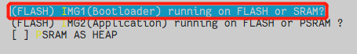
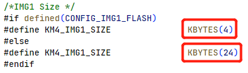
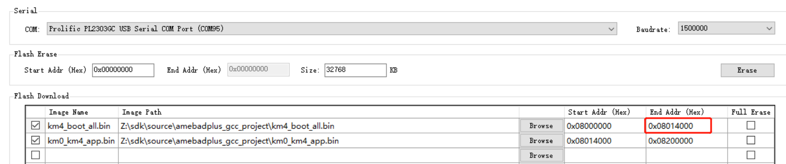

How to Modify Memory Layout
The following memory size can be modified.
Bootloader
BD_RAM
BD_PSRAM
Heap
Modifying Bootloader Size
If you need to enlarge the size of KM4_BOOT_RAM_S,`` the modified KM4_BOOT_RAM_S size should be 4KB aligned because the MPC protection is protected in unit 4KB.
Follow the steps to modify the size of Bootloader:
Modify the CONFIG Link Option in menuconfig to choose whether to place the Bootloader (IMG1) on FLASH or SRAM. When SRAM is selected, the size of
KM4_BOOTLOADER_RAM_Sis 24K; when FLASH is selected, the size ofKM4_BOOTLOADER_RAM_Sis 4K.
By modifying
KM4_IMG1_SIZEin{SDK}\amebadplus_gcc_project\amebaDplus_layout.ld, users can change the size of the KM4 BOOTLOADER RAM S.
Re-build the project to generate the Bootloader.
Modify the end address of
km4_boot_all.binif Bootloader is too large, and download the new Bootloader.
{kind=link}
{kind=link}
{kind=link}
After that, Boot ROM will load the new Bootloader if the version of new Bootloader is bigger.
Modifying BD_RAM Size
Follow the steps to modify the size of KM4 BD RAM:
Users can change the KM4 BD RAM size by modifying
RAM_KM0_IMG2_SIZEin{SDK}\amebadplus_gcc_project\amebaDplus_ layout.ldto change the end address ofKM4_BD_RAM.
Re-build and download the new Bootloader and IMG2 OTA2 as described in Section section flash_layout_app_ota1 step 2 ~ 3.
Modifying BD_PSRAM Size
If user wants to modify the KM4 BD PSRAM size, please modify the running position of IMG2 in menuconfig first. Any option with PSRAM is acceptable. Then modify PSRAM_KM4_IMG2_SIZE in {SDK}\amebadplus_gcc_project\amebaDplus_layout.ld to change the end address of KM4_BD_PSRAM.

Extending Heap Size
The heap size consists of multi-blocks and is passed to the operating system by the os_heap_init() function in component\os\freertos\freertos_heap5_config.c. By default, PSRAM_HEAP1_START is invalid address and PSRAM_HEAP1_SIZE is 0.

If the heap of KM4 is not enough, define Heap Start and Heap Size for some unused areas in amebaDplus_layout.ld, and then use the os_heap_add function to add the area to the heap array. The address shall be a valid value in PSRAM, then re-build and download the new image to let KM4 use the extended heap.
bool os_heap_add(u8 *start_addr, size_t heap_size);
Note
The symbols defined in linker script (amebaDplus_layout.ld) need to be declared in ameba_boot.h before they can be used.
If KM0 heap is not enough, modify the KM0_PSRAM_HEAP_EXT accordingly.